Modélisation d'un bâché Kils (1ere partie)
Ce tutorial montre les techniques de modélisation LPM (Low Polys Modelisation) pour réaliser un wagon kils. Il aborde aussi l'extrusion. Technique essentielle à connaître pour ne pas de borner à dessiner des cubes.
Les splines de bases
Nous allons commencer par la bâche. Elle sera réalisée par extrusion. L'extrusion (Loft en anglais) requiert deux splines: le forme à extruder (shape) et le chemin d'extrusion (path). Pour avoir davantage de renseignements sur les splines, voir le tutoriel qui y est consacré.
Avant de se mettre à la création, nous allons régler la grille et l'aimantation du curseur de souris ( cf: tutoriel sur les snaps). Cliquer droit sur les boutons de snap. Dans l'onglet Snaps, cocher uniquement Grid Points. Dans l'onglet Home Grid, régler Grid Spacing à 0,5.
Cliquer sur la vue Front et l'étendre avec Min/Max Toggle 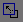. Zoomer avec le bouton Region Zoom autour du point (0,0) tel que l'écran fasse environ 5 mètres de haut.
Dans le panneau de commande Create  ,
en mode Shape ,
cliquer sur Line. Pointer sur le point (-1,5; 1)
,
en mode Shape ,
cliquer sur Line. Pointer sur le point (-1,5; 1)
Cliquer, relâcher puis pointer au point (-1,5; 3).
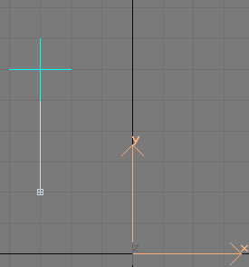Cliquer sans relâcher puis pointer au point (-1,5; 4).
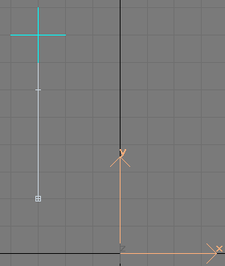Relâcher puis pointer au point (0; 4).
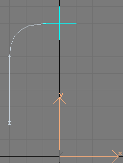Cliquer sans relâcher, déplacer la souris puis revenir au point (0; 4), relâcher. Enfin cliquer droit.
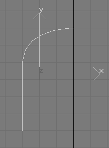Le chemin d'extrusion est fini. Appuyer sur T (vue de dessus). A partir du point (-1,5; 0), on va dessiner une ligne avec 15 points, un tous les 0,5m, dessinés par simple clic.
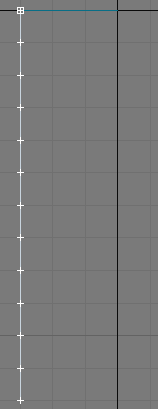 Dans le panneau de commande Modify ,
Appuyer sur le bouton Vertex
et sélectionner le dernier point. Enclencher le mode Translation
(Select and Move)  puis contraindre l'axe Y. Dévérouiller le Snap 3D
et décaler le point vers le haut comme sur la figure suivante.
puis contraindre l'axe Y. Dévérouiller le Snap 3D
et décaler le point vers le haut comme sur la figure suivante.
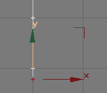
A présent, sélectionner un point sur deux et contraindre l'axe X. Les déplacer légèrement vers la droite comme sur la figure suivante.
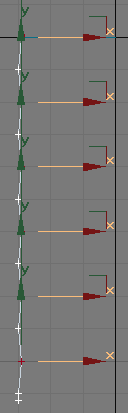Il faut déplacer le point de pivot de la spline pour qu'il se trouve sur le chemin d'extrusion. Dans le panneau de commande Hierarchy , cliquer sur Affect Pivot Only, cliquer sur le bouton Align 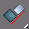. Aligner le pivot par rapport à la spline en paramétrant Pivot Point pour Current Object, Minimum pour Target Object et en cochant les axes X et Y.
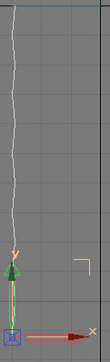La forme est finie.
L'extrusion
Nous devons faire l'extrusion maintenant. Sélectionner la première
spline. Dans le panneau de commande Create ,
en mode Geometry
positionner la combobox sur Compound Objects puis cliquer sur Loft.
Puisque cette spline est le path, nous devons sélectionner la spline
qui sera la shape. Cliquer sur Get Shape
L'objet obtenu ne correspond pas exactement à l'objet désiré. La shape a subi une rotation indésirable et la face visible des polygones se trouve du mauvais côté. Dans le panneau de commande Modify , développer la croix Loft et cliquer sur Shape. Sélectionner la shape, cliquer sur les boutons Select and Rotate puis Angle Snap. Tourner la shape de 180° autour de l'axe Y. Cliquer sur Loft dans le panneau de commande. Développer le menu Skin Parameters et cocher Flip Normals. Les polygones sont désormais du bon côté mais il y en a beaucoup trop. Dans le même menu, régler Shape Steps et Path Steps respectivement à 0 et 3. C'est largement suffissant pour de la 3D temps réel.
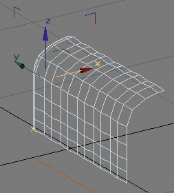Il est encore possible de supprimer des facettes inutiles. Dans le panneau de commandes Modify , dérouler la liste des modificateurs et cliquer sur Edit Mesh. Cliquer sur l'icône Vertex . Sélectionner les vertices comme sur la figure suivante. Les supprimer.
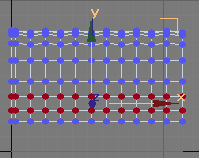Sélectionner les pixels au-dessus. Activer le Snap 3D en cochant Vertex. En mode Select and Move, tirer les vertices vers ceux du bas. Avec le snap, ils se placeront exactement à la même position. On supprimera le points inutiles plus tard.
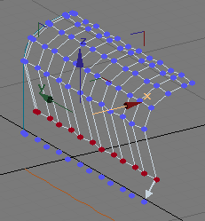Sélectionner les points décalés à la base de la bâche. Avec la fonction Align, les aligner suivant l'axe X au minimum.
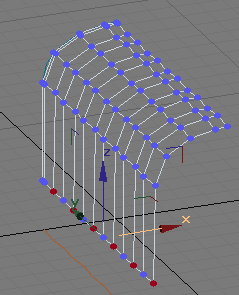
Cliquer sur l'icône Polygon  .
Sélectionner les facettes comme sur la figure suivante. Régler
le groupe de lissage comme sur la figure d'après.
.
Sélectionner les facettes comme sur la figure suivante. Régler
le groupe de lissage comme sur la figure d'après.
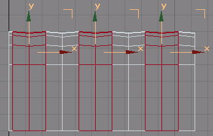 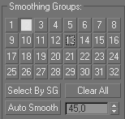
Sélectionner ensuite les autres facettes et régler le groupe de lissage à 3.
Voici le résultats pour cette première partie du tutorial pour réaliser un kils.
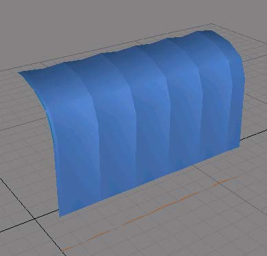